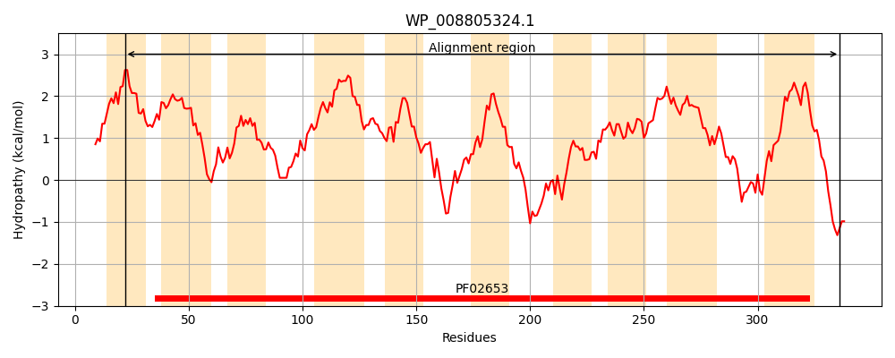
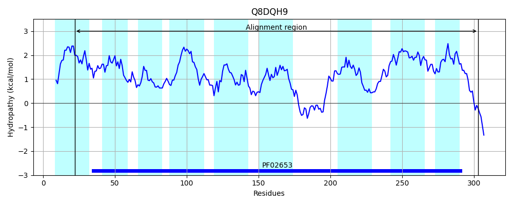
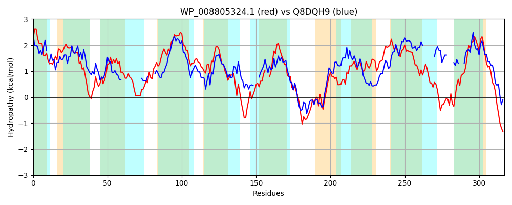

Hit Accession: Q8DQH9
Hit TCID: 3.A.1.4.10
Hit Description: gnl|BL_ORD_ID|16034 gnl|TC-DB|Q8DQH9|3.A.1.4.10 ABC transporter membrane-spanning permease-branched chain amino acid transport OS=Streptococcus pneumoniae (strain ATCC BAA-255 / R6) GN=livM PE=4 SV=1
Mach Len: 317
e:0.000000
Query TMS Count : 10
Hit TMS Count: 9
TMS-Overlap Score: 6.450000
Predicted Substrates:CHEBI:16857;L-threonine, CHEBI:17191;L-isoleucine, CHEBI:2539;alanine, CHEBI:9116;serine, CHEBI:25017;leucine, CHEBI:27266;valine
BLAST Alignment:
Score: 425 , Bit scores: 168 bits, E-value: 1.3e-49, Alignment length: 317, Percentage identity: 35
Query: 22 IALLAGINVVFNDYIVRVISTIFIFMILAVSYNLINGVTGQLSLEPNGFVAVGAYVTALLILSSDSKVDMFEMAAPSPWILSLHAGFLPALLISGLCAAALAVCLAVPVFRVRGDYLAIVTLGFGFIIKILAINNPQITNGAIGLNDIPQQPHLLFW--CGLFALLATGMILQLVWSKYGRMMKAIRDDEDAAIAMGVNTFRIKTCAFATSAFFEGIGGGLLASLLTTISPGLFDFMLTFQLLIIIVLGGLGSTTGALLGTVLVVGSGEWLRFLDQPLQFFGHDLGAYPGLRMVVFSLLLLIIMLFAREGLLGKKEI 336
I++L + V+ N + V+++ I I +ILAV NLI G +GQ SL GF+A+GAY A++ + SP + F A+L+ L + A+A+ + +P R++GDYLA+ TLG II+I IN +TNGA G+ IP + W F ++ T L + S GR ++R+DE AA ++GVNT +IK AF A I G L A + ++ P + F+ + +LII+V GGLGS TGA++ ++ L L+ LQ D+ + +RM++++L L+++M+F GLLG E+
Sbjct: 22 ISVLVSVGVL-NLFYVQILQQIGINIILAVGLNLIVGFSGQFSLGHAGFMAIGAYAAAII-------------GSKSP----TYGAFFGAMLVGALLSGAVALLVGIPTLRLKGDYLAVATLGVSEIIRIFIINGGSLTNGAAGILGIP---NFTTWQMVYFFVVITTIATLNFLRSPIGRSTLSVREDEIAAESVGVNTTKIKIIAFVFGAITASIAGSLQAGFIGSVVPKDYTFINSINVLIIVVFGGLGSITGAIVSAIV-------LGILNMLLQ----DVAS---VRMIIYALALVLVMIFRPGGLLGTWEL 303 | Protein Hydropathy Plots: |
|---|
|  |  |
Pairwise Alignment-Hydropathy Plot:
|
|---|
|  |